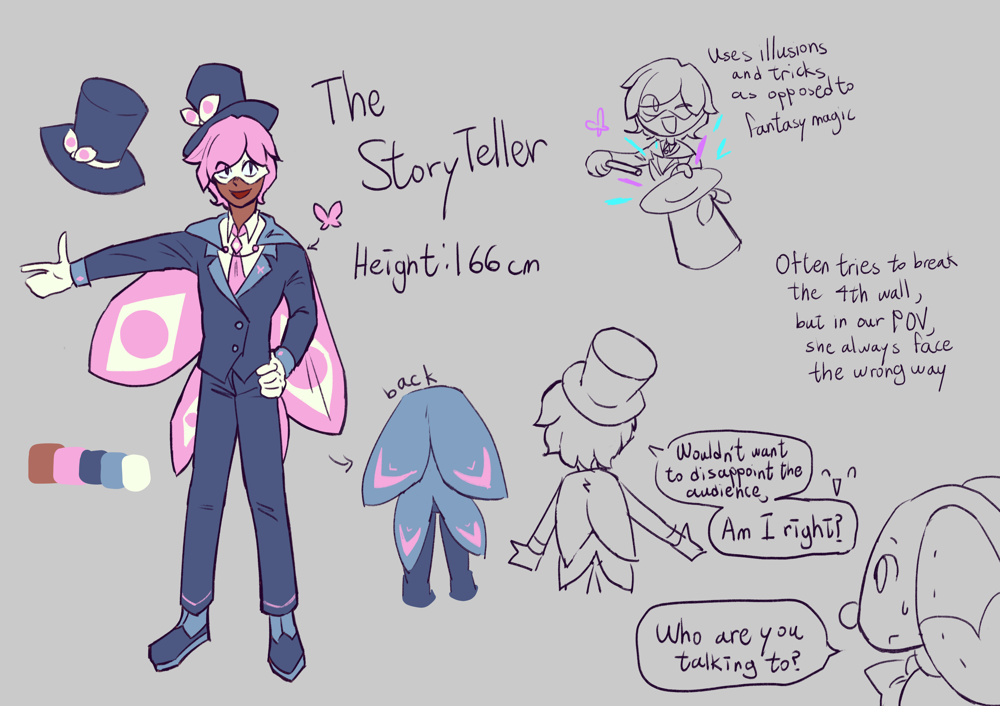

All eyes on me!

Lore facts:
- Despite being in a world of magic, she simply uses tricks and illusions for her colorful "magic", she says it's more interesting this way!
- She views this world as a story, and believes there are audiences watching her and others beyond the fourth wall. However, if we go meta a bit, she never faces our POV when she tries to break the fourth wall.
- She entering the workshop is completely accidental, but she stayed here out of curiosity
- Her design is drawn with eyes in mind, symbolising the audience watching the show
Meta facts:
- She is created in a dream in 5 March 2018 which is about a girl (Luna) and boy (Leo) stumbling into a secret doll factory under a tree, and they got attacked by a robot cat
- I remember Charles said something like "You two lovebirds better stop flirting and leave this place", which the two got really embarrased
- Originally Luna and Leo are Kyrea's parents, this is retconned
- Pretty sure I designed her with Timekeeper and Shadow Milk as inspiration... augh